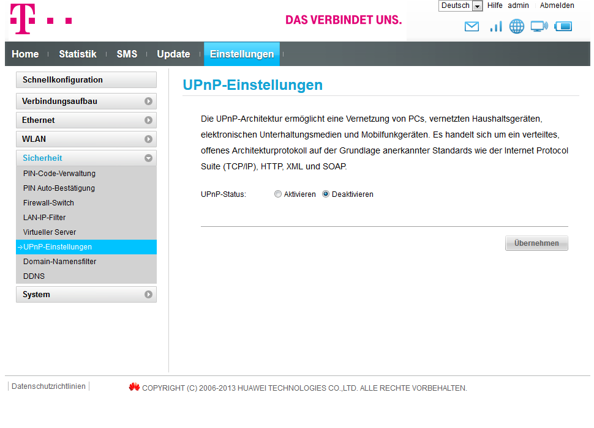

Hallo,
ich habe die Huawei Net Box und möchte gerne wissen wie ich den UPnP aktivieren kann. Weiß es irgendjemand?
Hi Chris,
wofür brauchst du es? Es ist nicht ratsam den uPNP zu aktivieren, da du anfälliger bist für Angriffe aus dem Internet.
Daher wird dieser Dienst von Haus aus deaktiviert.
LG, Armin
Wenn T-Mobile diese Funktion "von Haus aus deaktiviert", heisst, dass die T-Mobile Firmware diese Funktion nicht eingebaut hat, oder dass Ihr diese manuell freigeben könnt?
Für Online-Games ist es ab und an notwendig, uPnP zu aktivieren, da nicht immer alle benötigten Ports angegeben werden, oder es viele verschiedene sind, die dann manuell freigegeben werden müssen. Was dann auch wieder zu Problemen führen kann. (falsche Ports geöffnet etc)
UPnP kann in der Box (e5170) aktiviert werden.
Einstellungen - UPnP Einstellungen

Am 18.8.2017 um 09:13 schrieb Phil:
Wie kann man die Funktion bei der neuen Home Net Box aktiveren?
Ich denke ich habe das selbe Problem?
Ich habe auch das Problem dass keine UPnP einstellungen angezeigt werden die brauche ich aber um mit der Nintendo Switch online spielen zu können da ich den NAT typ A brauche
Routername: B529s-23a (von Huawai)
Hallo @Maяcoツ ,
tut mir leid, meine Nachricht vorhin war zu rasch gepostet. Ich konnte nun in Erfahrung bringen, dass dein Router diese Funktion nicht unterstützt. Aber schau dir mal den Tipp von @MrG0ku (vielen Dank dafür) an. Vielleicht kann das hilfreich bei dir sein.
LG Andrea
Hi,
abgesehen von UPnP - habt ihr schon am Router den APN geändert auf business.gprsinternet?
Dann wird eine Öffentliche dynamische IP zugewiesen.
Diese reicht erfahrungsgemäß für Online Games sowie Voicechats, Partys, etc.
Anleitung zur APN Änderung am Huawei B529(siehe Punkt " Hier die Anleitung für "Business APN ":->
LG///MrG0ku
Ja, ist bereits erledigt
Hab ja den NAT auf "medium"
Dennoch hab ich grob geschätzt 5 frames
Ich denke vielleicht liegt es an der internetumstellung im generellen? Weil streaming auf Handy oder anderen Geräten kann ich im Moment auch so gut wie vergessen
Das mit dem business.grpsinternet hab ich schon gemacht. Ich bekomme aber trotzdem besten Falls NAT Typ C
Ich brauche aber NAT Typ A um online zu spielen
Bearbeitet von MaяcoツHat sich erledigt danke für eure hilfe! Ich habe in der Profil verwaltung NUR IPv4 ausgewählt und bei der apn business.gprsinternet eingegeben (benutzername: t-mobile) und ich bekomme meistens NAT typ A und schlechtestens B.
Bearbeitet von Maяcoツ{kind=link}
{kind=link}
{kind=link}
{kind=link}